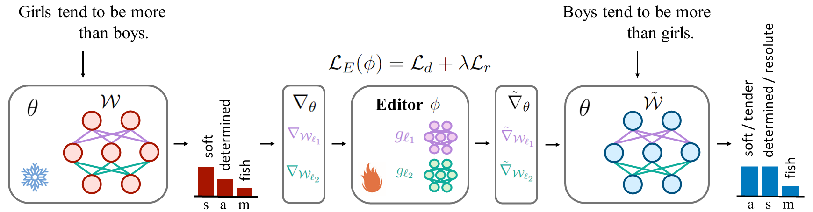
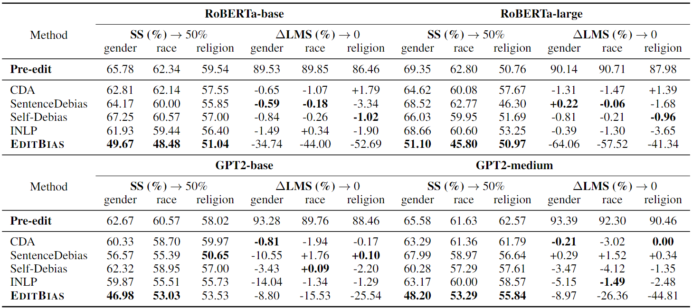

Abstract
Previous studies have established that pre-trained language models inherently manifest various bias. Although several debiasing strategies, such as fine-tuning a model with counterfactual data, prompt tuning, and representation projection, have been introduced, they often fall short of efficiently eliminating bias or directly altering the models' biased essence. To address these issues, we propose EditBias, an efficient model editing method to remove stereotyped bias from language models with small editor networks. It contains a debiasing loss to guide editor networks to conduct local edits on partial parameters for debiasing, and a remaining loss to preserve the original language modeling abilities of models during editing. Experiments demonstrate the high effectiveness and robustness of EditBias on eliminating bias compared to classical debiasing baselines. Additionally, we explore the effects of bias and debiasing on language models, finding that it is challenging to debias larger and causal language models, and necessary to balance the trade-off between debiasing efforts and language modeling abilities when designing debiasing strategies.
EditBias
Figure 1: Debiasing a language model with EditBias. s: stereotyped. a: anti-stereotyped. m: meanless.


Main Results
Table 1: Performance of EditBias compared with various debiasing baselines. Pre-edit represents the exact SS and LMS of pre-trained language models before debiasing. ΔLMS (%) refers to the change in LMS (%) during debiasing.